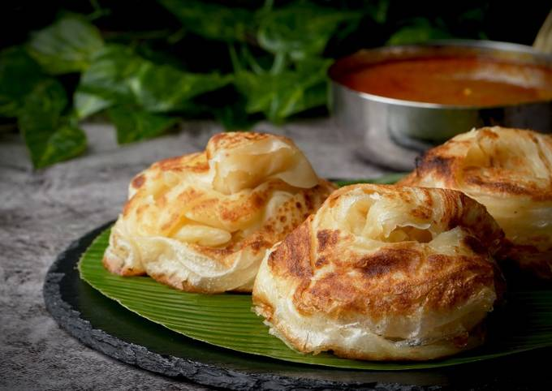

Bun parotta is a popular Madurai street food that is essentially a cross between a bun and a parotta. It is made by folding the parotta into the shape of a bun, similar to a Malabar parotta. Karupanna and his wife Vijayam claim to have been the first to make bun parotta in 1991 at their stall Madurai Bun Parotta Kada. Bun parotta is typically served with hot curries.The bun parotta has the shape of a bun and is also fluffier than the usual Malabar parotta. Although the ingredients are almost the same in both kinds of parotta, the bun parotta is said to be made without eggs, making it a good option for vegetarians.
firstly, adding sugar helps to give nice golden colour to parotta.
additionally, kneading the dough with milk makes paratha soft.
also, we are not using eggs in this recipe, so i have added ¼ tsp baking soda.
additionally, kneading the dough with milk makes paratha soft.
finally, bun parotta recipe tastes great when made with a generous amount of oil.
Return Home Page